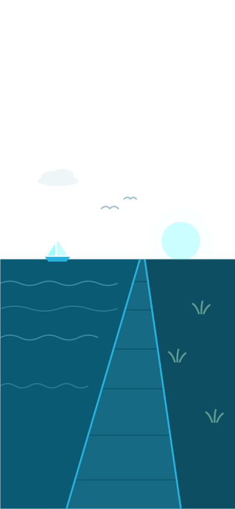
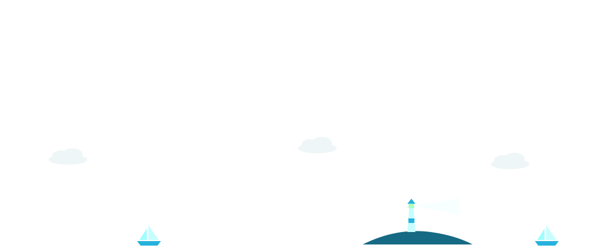
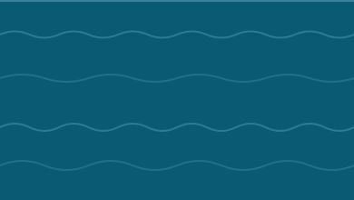
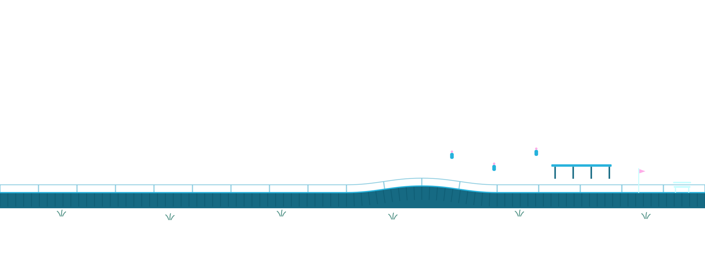

Reset Walk
Take a short walk to clear your mind, settle your thoughts, and return refreshed.
Walk in place or around the room · about 1 minute



{{ stage.place }}
{{ stage.cue }}
{{ remaining }}
The overlook
You’ve arrived with a clearer mind.
Reset Complete
You took a moment to pause, reset, and reconnect. Carry that clarity into your next conversation.